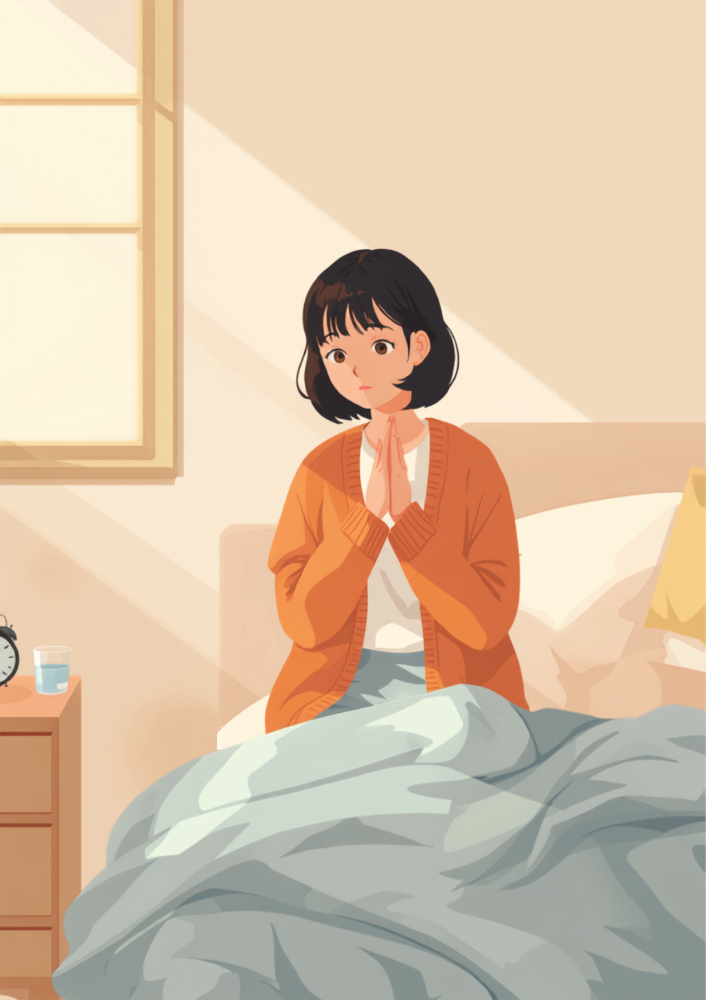
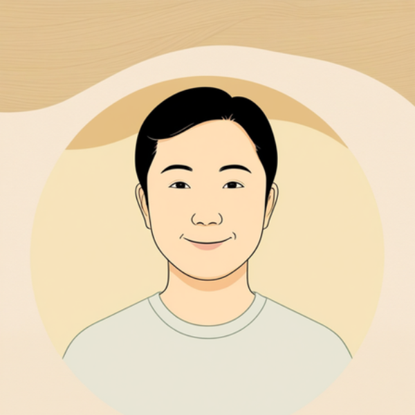

関節リウマチは、朝起きてすぐの時間帯に症状が強く出やすいという特徴があります。手や指がこわばって動かしにくく、着替えやドアノブを回す動作にも時間がかかる。それなのに始業時間は毎日同じで、「また今日も痛いの?」と思われそうで、遅れそうなことも、しんどさそのものも、なかなか言い出せない。この記事では、関節リウマチのある方が仕事の中で抱えやすい朝のこわばりと始業時間のギャップ、職場への伝え方、使える制度を当事者の声をもとに整理しました（2026年7月時点の情報です）。
PR

起きてすぐの手は、思うように動いてくれない
「また今日も痛いの?」と思われそうで言えない朝
関節リウマチの「朝のこわばり」は、夜間に炎症を起こす物質が体の中で増えることが関係していると言われています。気合いや意識の問題ではなく、体の中で起きている炎症反応のあらわれなんです。ミミ
就労支援の現場で関わってきた中で、関節リウマチ のある方から繰り返し聞いてきた言葉があります。「朝、手が握れないんです」というものです。起きてすぐは指がこわばって歯ブラシも持ちにくく、ボタンをとめるのに普段の何倍も時間がかかる。それでも始業時間は9時なら9時で固定されていて、遅れそうになるたびに、体の状態を説明するのか、それとも黙って謝るだけにするのか、その場で判断を迫られます。
関節リウマチは杖や装具のような「見てわかるサイン」がないことも多く、周囲からは「そんなに大変そうに見えない」と受け取られやすい障害のひとつです。本人にとっては毎朝くり返される痛みでも、職場では「またか」と思われそうで、つい「寝坊しました」とだけ伝えて済ませてしまう、という声もよく聞きます。
!
関節リウマチの症状の現れ方や程度には個人差があります。この記事で挙げる内容がそのまま当てはまるとは限らないため、体調に不安がある場合は自己判断せず主治医に相談することをお勧めします。
「正直言うと、入社して半年くらいは誰にも言えませんでした。朝どうしても支度に時間がかかって、遅刻ギリギリで駆け込む日が続いて、上司から『最近だらしないね』って冗談っぽく言われたときは、笑ってごまかしたんですけど内心すごくつらかったです。結局3ヶ月くらい我慢して、ある朝どうしても手が握れなくてスマホの操作もできず、遅刻の連絡すらできなかった日があって、そこで初めて事情を話しました。」
40代・女性（関節リウマチ・事務職）
「見た目が普通なので、痛いって言っても『そうは見えないけど』って返されることが何度かありました。めちゃくちゃ悔しくて、正直しばらく人間不信気味になってました。エンジニアなのでキーボードが打てないと仕事にならないんですけど、朝一のミーティングで手が動かしにくいのを隠しながら参加してたのを、今思えばもっと早く伝えればよかったなと思います。」
20代・男性（関節リウマチ・エンジニア職）
朝のこわばりはなぜ起こる、時間帯で変わる体の負担
関節リウマチの症状には、時間帯による波があるとされています。夜間から明け方にかけて炎症に関わる物質の働きが強まり、起床時に痛みやこわばりがピークを迎え、そこから日中にかけて少しずつ和らいでいく、という経過をたどることが多いようです。つまり「朝だけ特別につらい」のは気のせいではなく、体の仕組みとして説明がつく ということです。
i
朝のこわばりが続く時間には個人差があり、治療の状況によっても変わるとされています。起床後30分程度でおさまる方もいれば、1時間以上続く方もいるようです。持続時間が急に長くなったと感じる場合は、主治医に相談することをお勧めします。
1日の中での、こわばり・痛みの強さの波
強い
弱い
6時
8時
10時
12時
14時
17時
19時
21時
こわばりのピーク
※体感の一例です。持続時間や強さは症状の程度によって個人差があります
朝のこわばりは、時間が経てば自然と和らんでいく性質のものでもある
この波を知らないまま「9時に元気に働ける状態」を一律に求められると、本人にとっては一番つらい時間帯に、一番気を張らないといけないという状況になってしまいます。始業時間をずらせるかどうか は、単なるわがままではなく、体の仕組みに合わせた working style の調整として考えられる余地があるのではないかと思います。
職場にどう伝える、始業時間との付き合い方
とはいえ、症状のすべてを職場に説明するのは現実的ではありませんし、伝え方によっては「そこまで大変なら休んだら?」と、望んでいない方向に話が進んでしまうこともあります。大事なのは、業務に関わる具体的な場面だけに絞って伝える ことだとされています。
始業時間について伝えるときの具体例
「朝の体調に波があり、始業時間を1時間ほど調整できると助かります」
「遅れる連絡自体が難しい朝もあるので、少し遅れても心配しないでもらえると助かります」
「午後は普段どおり動けることが多いので、大事な業務は午後に回してもらえると安心です」
「体調が悪いときだけ声をかけてほしいので、普段は気にしなくて大丈夫です」
相談の一コマ

相談者
朝どうしても手がこわばって、始業時間ぎりぎりになってしまうんです。でも「また今日も痛いの?」って思われそうで、なかなか相談できなくて。
ミミ
朝のこわばりは体の仕組みとして起こるものなので、気合いでどうにかできるものではないんですよ。まずはそこを知ってもらうところから始めても良いかもしれません。
相談者
なるほど…でも「始業を遅らせてほしい」なんて、わがままに思われないか不安です。
ミミ
「何時から何時まで調整したい」と具体的な範囲で伝えると、周りも対応をイメージしやすくなります。産業医や人事担当者を通して相談する方法もありますよ。
信頼できる上司や人事担当者に、業務に関わる範囲でまず共有し、必要であればフレックスタイム制度や時差出勤の相談につなげていく、という進め方をとっている方もいるようです。制度がない職場でも、時短勤務や休憩の取り方の工夫など、話し合いの余地がある場合があります。
伝えることは、甘えでも大袈裟なことでもありません。体の仕組みに合わせて働き方を調整することは、お互いが長く一緒に働くための準備だと思ってみてください。ミミ
使える制度と、通院・治療との両立
身体障害者手帳という選択肢
関節リウマチは、症状の程度や日常生活への影響によっては、身体障害者手帳の肢体不自由 の区分に含まれる場合があります。関節の変形や可動域の制限の程度によって等級が異なるため、詳しくは主治医や自治体の障害福祉窓口に確認するのが確実です（2026年7月時点の情報です）。手帳を取得すると、障害者雇用枠での就職や、企業側の合理的配慮を前提にした働き方を選びやすくなる場合があります。
通院・治療との両立
関節リウマチの治療には、生物学的製剤と呼ばれる薬を使う場合があります。投与間隔は薬の種類によって異なり、2週間に1回のものから2ヶ月に1回程度で済むものまでさまざまな選択肢があるとされています。ライフスタイルに合わせて主治医と相談しながら治療法を選べる場合があるため、通院頻度が仕事に与える負担が気になる方は、一度相談してみる価値があるかもしれません。
主治医・リウマチ専門医（症状の記録や、働き方についての意見書の相談）
職場に選任されている産業医（50人以上の事業場に選任義務あり）
自治体の障害福祉窓口、身体障害者手帳の相談窓口
就労移行支援事業所（体調管理を含めた就労準備や職場との調整）
関節リウマチの症状の現れ方や、必要な配慮の内容には個人差があります。この記事の内容がそのまま当てはまるとは限らないため、実際の判断は主治医・支援者・自治体の窓口とよく相談しながら進めることをお勧めします（2026年7月時点の情報です）。
朝のこわばりは、気合いや根性でどうにかできるものではありません。それでも、具体的な場面に絞って伝えることは、決して大袈裟なことではありません。
よくある質問
Q. 関節リウマチでも障害者手帳は取れますか？
関節リウマチの症状の程度や日常生活への影響によっては、身体障害者手帳（肢体不自由の区分）の対象になる場合があります。関節の変形や可動域の制限がどの程度あるかによって等級が異なるため、詳しくは主治医や自治体の障害福祉窓口にご確認ください（2026年7月時点の情報です）。
Q. 朝のこわばりの時間はどのくらい続きますか？
個人差が大きいとされていますが、起床後30分から1時間程度続くケースが一般的に見られるようです。治療の状況によって長さは変わることがあるため、こわばりの持続時間が急に長くなったと感じる場合は、我慢せず主治医に相談することをお勧めします。
Q. 職場にフレックスタイムを希望する場合、どう伝えればいいですか？
症状のすべてを詳しく説明する必要はないとされています。「朝の体調に波があり、始業時間を1時間ほど調整できると助かる」など、業務に関わる具体的な要望に絞って伝える方法が助けになる場合があります。人事担当者や産業医を通じて相談する方法もあります。
Q. 通院や点滴治療で仕事を休みがちになるのが心配です
生物学的製剤には投与間隔が2週間から2ヶ月程度までさまざまな選択肢があり、主治医と相談しながら生活スタイルに合わせた治療法を選べる場合があります。通院日をあらかじめ職場と共有し、業務量を調整してもらいながら両立している方もいます。
Q. 見た目ではわからないので、しんどさを信じてもらえないときは？
関節リウマチは杖や装具のような見てわかるサインがないぶん、周囲に伝わりにくい障害のひとつとされています。すべてを理解してもらおうとせず、業務に関わる具体的な場面だけに絞って伝えることで、少しずつ状況が伝わりやすくなる場合があります。
朝のこわばりと付き合う：この記事のポイント
1
朝のこわばりは体の仕組みによるもの
気合いや根性の問題ではなく、炎症反応として説明がつく
2
症状には1日の中で波がある
朝が一番つらく、時間が経つほど和らいでいく傾向がある
3
始業時間の調整は具体的に相談していい
「何時から何時まで」など範囲を絞って伝えると伝わりやすい
4
通院・治療は生活に合わせて選べる場合がある
投与間隔の異なる治療法を主治医と相談できることがある
5
手帳や産業医など、頼れる制度がある
一人で抱え込まず主治医・支援者と状況を共有する
この5点を頭に置いておくだけで、少し気持ちが軽くなるかもしれません
PR
一人で抱え込む前に、今の気持ちを話してみませんか
「まだ迷っている」段階でも大丈夫です。mimemimeの無料相談は、今の状況の整理から一緒に始められます。
無料で話してみる
おのざる